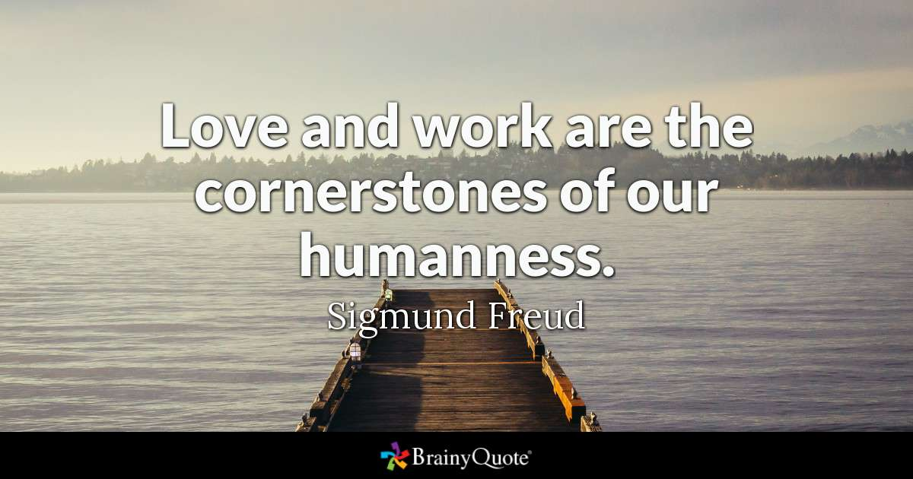
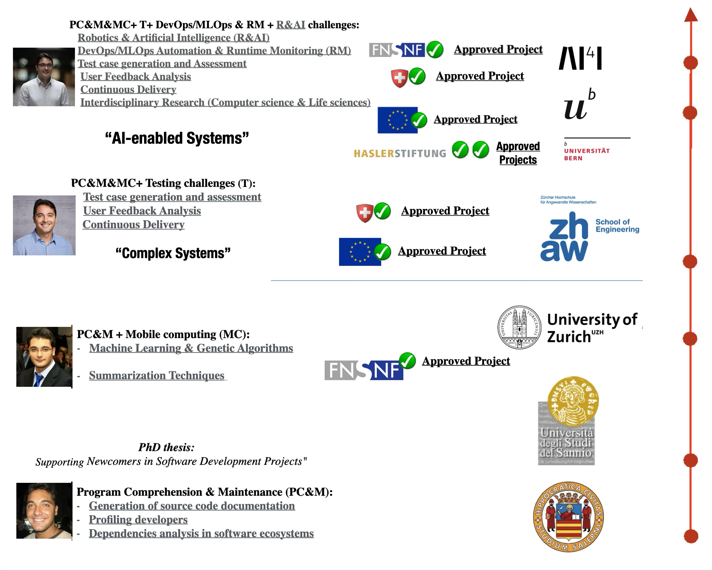
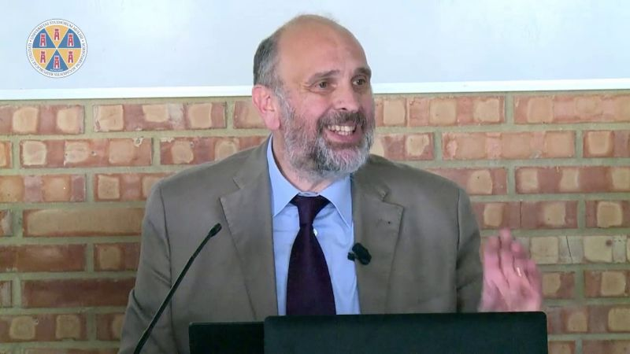
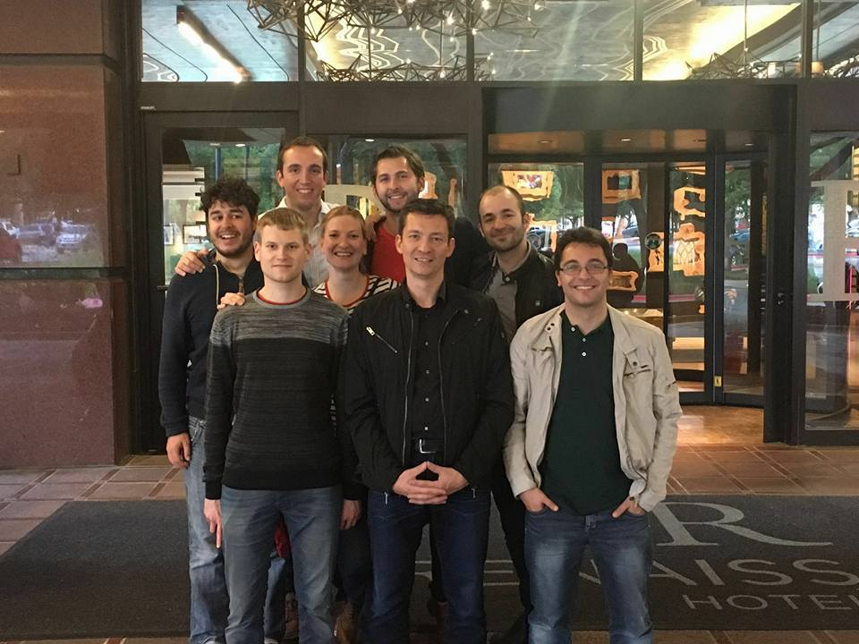
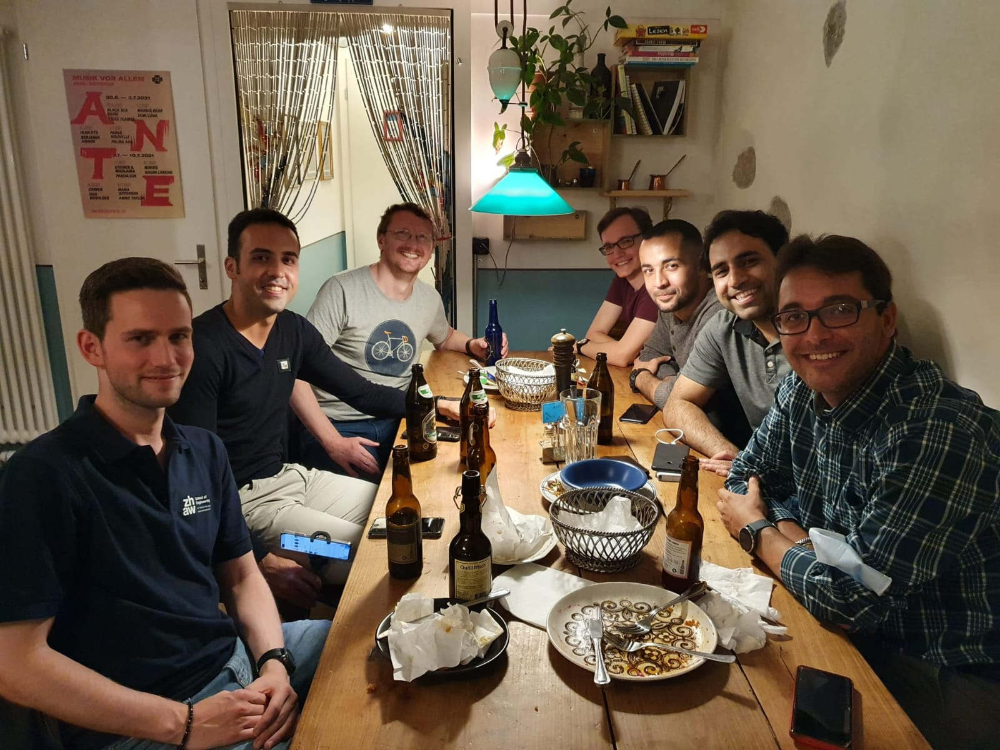
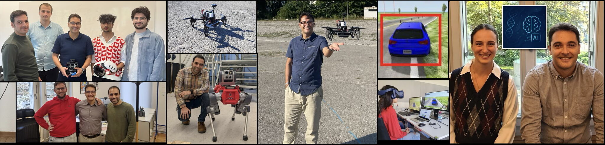
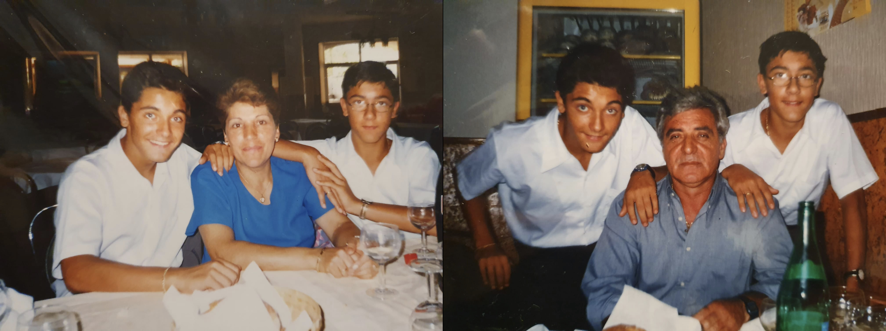
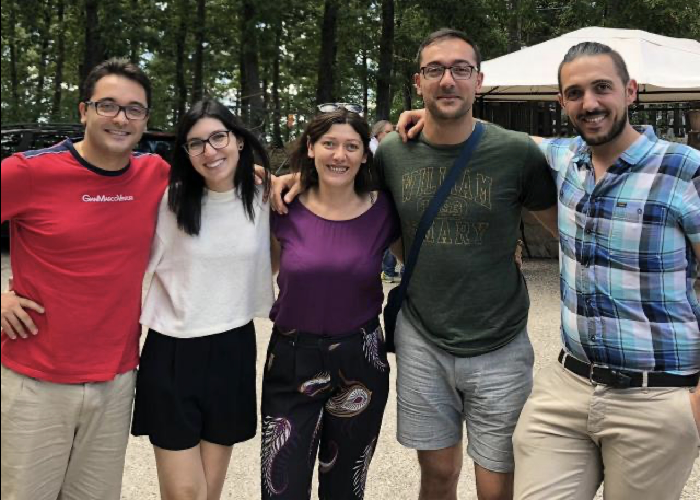

Research Journey & Acknowledgments
Research is never an individual journey. Every scientific contribution is built through the support, inspiration, trust, and collaboration of many people. This page is a small acknowledgment of the people, mentors, colleagues, students, friends, and environments that shaped my personal and professional path.
Favourite Quote
"Love and work are the cornerstones of our humanness".
Sigmund Freud

THANK YOU!
Life is short, and we are extremely fortunate to have the opportunity to
experience it. Throughout my journey, I have always tried to remember that
"Love and work are the cornerstones of our humanness" (Sigmund Freud).
This page is dedicated to the people and environments that contributed to
who I am today. Some of them influenced my research, some my teaching,
some my personal growth, and many of them influenced all these aspects
together.
About my professional journey
Honoring Giovanni Capobianco: A Mentor Who Shaped My Path

Giovanni Capobianco (Professor at the University of Molise until his
untimely passing in 2025) was a source of inspiration for many students
and researchers.
His guidance and example had a lasting impact on my career and on the
person I aspire to be as a teacher and researcher. The news of his passing,
together with the touching messages shared by his students, reminded me
of his warmth, patience, and deep passion for education.

I was fortunate to have Giovanni as one of my supervisors, together with Rocco Oliveto, during my bachelor thesis.
His guidance influenced not only my research approach but also my vision of what research and education should represent: passion, integrity, curiosity, and an uncompromising pursuit of quality.
I remain deeply grateful for the values and lessons he shared with me. Honoring his memory means carrying these teachings forward and trying to transmit them to the students and researchers I will meet throughout my career.
Thank you, Giovanni, for your example, your values, and your belief in the importance of research and education. It was a privilege to know and learn from you.
Ph.D. Years at the University of Sannio: "Push" and Perseverance
My Ph.D. studies at the University of Sannio represent a period of my life
that I associate with the words "push" and "run".
It was a period in which I had to work extremely hard, improve quickly,
and challenge myself continuously to become the researcher I wanted to be.
I would like to thank Gerardo Canfora and Massimiliano Di Penta, who were
probably the best advisors I could have had considering my skills and
personality.
They guided me during a fundamental phase of my development and helped me
build the foundations of my research career.
One of my closest collaborators and friends from the University of Sannio is
Andrea Di Sorbo. We started working together during his Ph.D. studies and
continued our collaboration over the years.
Andrea is creative, brilliant, and, more importantly, a person with strong
ethical principles. His approach to research and collaboration represents a
very positive example in an academic world that is sometimes challenging.
Thank you, Andrea.
More generally, I have many friends and colleagues from the University of Sannio and from abroad whom I met during my Ph.D. journey. There are too many people to mention individually, but I sincerely thank all of them for their support and for making me feel at home whenever I returned to UoS.
University of Zurich: Independence and Flexibility
My postdoctoral experience at the University of Zurich (UZH) represents a
different but equally important phase of my life. I associate this period
with the words "flexibility" and "independence".
UZH provided me with an environment where I could explore new ideas,
develop my own research direction, and learn how important independence is
for becoming a mature researcher.

During this period, pushing myself beyond my comfort zone was essential.
I would like to thank several people who contributed to this important chapter:
- Harald Gall, for supporting my research initiatives and introducing me to the UZH environment. During my time in the SEAL group, I grew both professionally and personally. I am deeply thankful for this experience.
- All students that I had the pleasure to teach and work with. Among them, working with Carol Alexandru was particularly enjoyable. We became good friends and it is always a pleasure to catch up.
- Mario Caputo, for the many intense and enjoyable conversations about AS Roma, our favourite Italian football team, and many other topics.
- The many colleagues and researchers I started collaborating with during this period across Europe, USA, Asia, and Canada.
In particular, in 2017 I had the opportunity to meet Prof. Oscar Nierstrasz (University of Bern). I consider that research meeting one of the most important moments of my career.
Oscar has a unique ability to help people understand their own interests, strengths, and motivations. This perspective had a significant influence on many successful research projects and proposals that followed.
ZHAW: Relevance and Impact
ZHAW, my working environment between 2018 and summer 2024,
represents the phase of my life that I associate with the words
"relevance" and "impact".
During this period, I became increasingly interested in focusing my research
efforts on activities that could create meaningful impact, not only from a
scientific perspective but also from a broader professional and personal
point of view.

At ZHAW, I had the opportunity to work with many excellent colleagues and friends, including Sean, Leonardo, Nicolas, Sajad, Christian, Prasun, Maria, Mohammed, Tamara, Teodora, Rafael, Stephan, Yanick, Annette, Conny, Rhiana, Oliver, Giovanni, Jonathan, Thomas, Wissem, Steven, Flavio, Dominique, Jasmin, Andreas, Freja, Gerald, Remo, and many others.
Among my closest colleagues and friends at ZHAW is Sean Murphy. Together, we worked on several activities that contributed to the acceptance of the COSMOS H2020 project proposal, where I acted as technical coordinator between 2020 and 2024.
Beyond his technical competence, I deeply admire Sean's professional attitude, ethical principles, and passion for high-quality work.
Thank you, Sean.
I also take this opportunity to thank ZHAW for providing an environment with a significant level of academic freedom and for supporting my professional development.
Looking back after five to six years at ZHAW, I see myself as a different person and researcher. The challenges, obstacles, barriers, and new experiences allowed me to rethink myself and focus more strongly on personal development.
I wish ZHAW continuous growth and many future success stories.
University of Bern: Freedom and Vision
University of Bern, my working environment as researcher and lecturer
since autumn 2024, represents a new chapter of my professional and personal
journey.
I associate this period with the words "freedom" and
"vision": a phase where I aim to focus on realizing the person and
researcher I would like to become.
UniBe represents a place where I can combine scientific curiosity,
independence, collaboration, and long-term research ambitions.
I am particularly thankful to Timo Kehrer for creating an environment
where this new chapter could develop.
This period represents a conceptual transition toward building a broader
research vision, while embracing new challenges and opportunities for
professional and personal growth.
UniBe has been the home of several successful projects, including:
- InnoGuard EU Project
(Marie Skłodowska-Curie Actions-funded Doctoral Networks project)
- SNF project SwarmOps
"Human-sensing based MLOps for Collaborative Cyber-physical systems"
- Hasler Foundation project Safe-2-Fly
"Advancing Unmanned Aerial Vehicles Reliability and Societal Trust Through
Integrated Testing and Formal Verification"
- Innosuisse project BioAI4LCMS
An interdisciplinary project combining biopharmaceutical R&D, artificial
intelligence, machine learning, and software engineering.
- Hasler Foundation Aerialist
"Bridging the Reality Gap in Testing Unmanned Aerial Vehicles"
These projects create opportunities for Ph.D. positions in Software
Engineering and Robotics, particularly focusing on MLOps for AI-enabled
Cyber-Physical Systems.
The objective is to develop cutting-edge approaches for AI-enabled
Cyber-Physical Systems (AI-CPS), improving their adaptability, reliability,
and sustainability in complex environments.
During these years, I also had the pleasure to work extensively with
Pooja Rani, my former Ph.D. student at the University of Bern.
Since her second year of Ph.D. studies, where I acted as co-supervisor,
we worked closely together. She impressed me with her determination,
creativity, scientific maturity, and kindness.
I am confident that she will continue achieving important results in her
career. She is currently Full Professor in Software Engineering at the
University of Mannheim.

AI4I and the IDeaLS Lab: Leadership and Future Vision
AI4I – Italian Institute of Artificial Intelligence for Industry,
my new working environment as Head of the IDeaLS Lab (starting February
2026), represents the next phase of my journey.
I associate this chapter with the words "vision", "autonomy",
and "leadership".
After years dedicated to building my own research profile, this new phase
represents an opportunity to build an environment where researchers can
develop new ideas, collaborate across disciplines, and contribute to
industrial innovation.
AI4I provides a unique combination of scientific excellence, industrial
relevance, advanced computational resources, and interdisciplinary
collaboration.
This represents a new professional and personal chapter in which I look
forward to building and leading a research laboratory focused on reliable,
sustainable, and intelligent software systems.
AI4I – the Italian Institute of Artificial Intelligence for Industry
is the national AI center founded by the Italian Government to foster
innovation, industrial transformation, and economic growth through
application-oriented AI research.
With strong national support, access to advanced HPC infrastructure
(including the Leonardo supercomputer at CINECA), and a large ecosystem of
academic, industrial, and institutional partners, AI4I aims to become a key
reference point for AI research and innovation in Italy and Europe.
IDeaLS Lab
("Intelligent Development and Large-Scale Systems Lab") will focus on:
- AI-assisted Software Engineering and MLOps for AI-enabled and
Cyber-Physical Systems
- Methods, tools, and pipelines for development, testing, monitoring, and
evolution of large-scale intelligent systems
- Dependability, explainability, security, and sustainability of AI-driven
software ecosystems
- Interdisciplinary research connecting Software Engineering, Artificial
Intelligence, Life Engineering, Cloud Computing, Robotics, Smart Cities,
and Intelligent Infrastructures
AI4I will be the home of projects such as:
- SNF project SwarmOps:
Human-sensing based MLOps for Collaborative Cyber-physical systems
The IDeaLS Lab will welcome Ph.D. students and postdoctoral researchers in
Software Engineering, Artificial Intelligence, Robotics, and Cyber-Physical
Systems.
The objective is to develop research that improves the adaptability,
reliability, sustainability, and societal acceptance of intelligent systems
operating in complex real-world environments.
From a personal and professional perspective, this step represents a natural
continuation of my journey: an opportunity to contribute to AI4I's mission,
develop a long-term research vision, and help shape the next generation of
AI-enabled technologies.
On a personal side...
-

Behind every professional achievement there are people who provide the foundations that make everything possible. My family represents what I call "identity": everything good I was, everything I am, and everything I will become is deeply connected to their love, support, and values. The first person from my family that deserves my gratitude is my father. He taught me the importance of building true relationships, and he was absolutely right: meaningful relationships make our lives richer and more special. He was the person who always believed in me, supported my choices, and helped me find my own path. He had a profound influence on my life, and I will always carry his lessons with me. I miss him deeply. In a similar way, my mother has always encouraged me throughout every stage of my life. She taught me the importance of courage, resilience, and making difficult decisions when circumstances require it. Her kindness, honesty, integrity, and energy are qualities that I deeply admire. Every conversation with her reminds me how rare and valuable these qualities are. My brother Annibale is probably the smartest person I personally know, but his qualities go far beyond intelligence. He is thoughtful, empathetic, humorous, strong, and always able to listen. The people who truly love us are those who stand beside us during difficult moments and sincerely celebrate our happiness. Annibale is one of these people. Thank you, Annibale, for being my special twin brother. My sister Lucia is a very dynamic and generous person. I admire her ability to face difficult situations with strength and positivity. She has a natural tendency to help others, and her kindness is something I deeply appreciate. We share many similarities: we do not take ourselves too seriously, but we take our work and responsibilities seriously. Thank you Lucia for all the wonderful moments together.
-

Poems and Reflections
One of the things that has always fascinated me is how simple words can express deep human experiences. Among the poems I have read, I particularly appreciated a poem about parents attributed to Pablo Neruda. The following translated version of "When Parents Grow Old" contains a message that I find extremely meaningful: "Let them grow old with the same love with which they raised you.... Let them repeatedly talk and tell stories with the same patience and interest with which they listened to yours when you were a child.... Let them win, as so many times they let you win.... Let them enjoy their friends, chatting with their grandchildren.... Let them enjoy living among the objects that have accompanied them for a long time, because they suffer feeling that you tear pieces of their lives away from them.... Let them be wrong, as so many times you have been wrong.... LET THEM LIVE and try to make them happy during the last stretches of the path they have left to walk, the same way they gave you their hand when you were beginning yours."
Inspired by this poem, I wrote the following open letter to my mother: Dear Mom, Enjoy your mature years with the same love with which you loved us and allowed us to grow. Tell us the stories of your life; we will listen to them with the same interest with which you listened to ours when we were children. Enjoy your friendships, your conversations with relatives, and all the people close to you. Keep close to you the things and values that have accompanied you for so long. They are important pieces of your life. Feel free to travel, as many times you and Dad allowed us to discover new places and experiences. Allow yourself to be happy, in the same way that you and Dad allowed us to be happy and always gave us a helping hand whenever we needed support. I love you with all my heart. Your son, Sebastiano
"Love and work are the cornerstones of our humanness." This sentence has accompanied my personal and professional journey. Research, teaching, collaboration, friendship, and family are not separate parts of life. They are connected by the people who inspire us and by the values we choose to follow. Thank you to everyone who has been part of this journey.